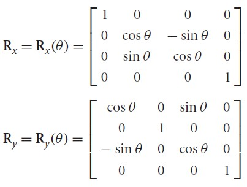
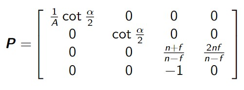

The transformation that was done was simply 0.5 units in the x, y, and z directions. As a more general expression, the translation matrix used can be found using the following form:
αx, αy, and αz represent the desired displacement in the x, y, and z directions respectively. In part 1 all three of the parameters would be 0.5.
For part 2:
The first two transformations are also translations and would use the same translation matrix shown above.
The first translation was (0.5, 0.5, 0.5).
For the second cube (two-point) the translation was (-1, -1, 0).
For the third cube (three-point), a translation of (2, 2, 0) was performed first using the same translation matrix shown above, then a rotation was needed.
For the rotation, the matrix used can be found as follows.

For the third cube, a rotation of 15° about the x and y axis were performed, so both rotation matrices shown above were used, replacing Θ with 15°.
In both parts 1 and 2, a view and projection matrix is also applied. The view matrix was found using the lookAt function which takes in the eye position, the position it is looking at, and a vector representing the up direction. The view matrix can be found based on the source code for the lookAt function shown below:

As for the projection matrix, it can be found with the following format, where α is the field of view, A is the aspect ratio, n is the near value of the view frustum, and f is the far value of the view frustum.

------------------------------------------------
For the first and second cubes, the current transformation matrix (CTM) was simply multiplying the vertex values by the translation matrix since there was only one transformation. The CTM can then be written as follows, with P being the projection matrix, V the view matrix, T the transformation matrix, and x being the position of the vertex.
CTM = P*V*T*x
To add on the rotation, the rotation matrices are multiplied after the transformation matrix but before the view matrix. This applies to the third cube, and the formula is as follows with Rx being the rotation matrix for the rotation about the x-axis and Ry being the rotation matrix for the rotation about the y-axis.
CTM = P*V*Rx*RyT*x